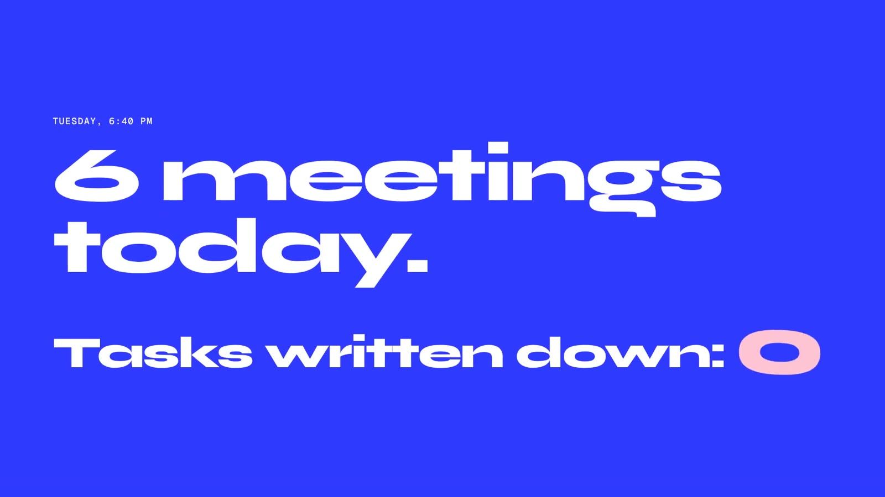
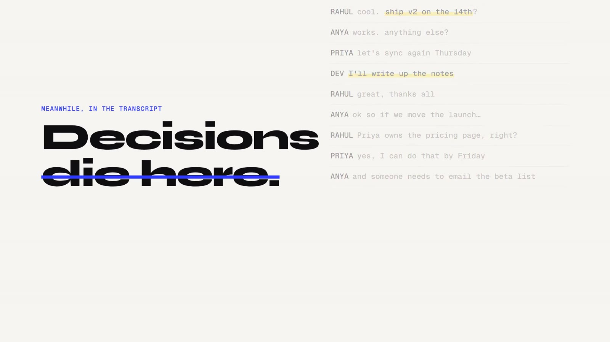
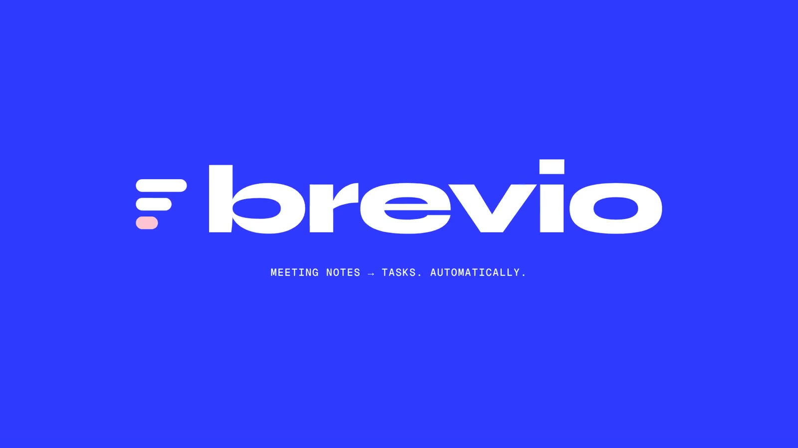
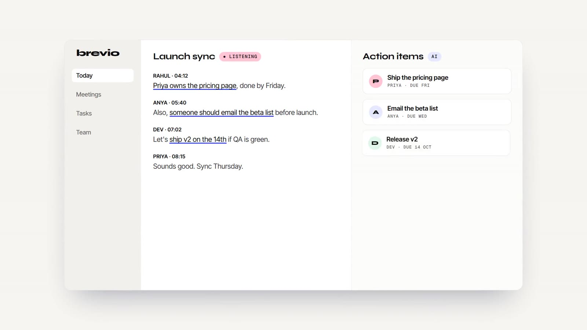
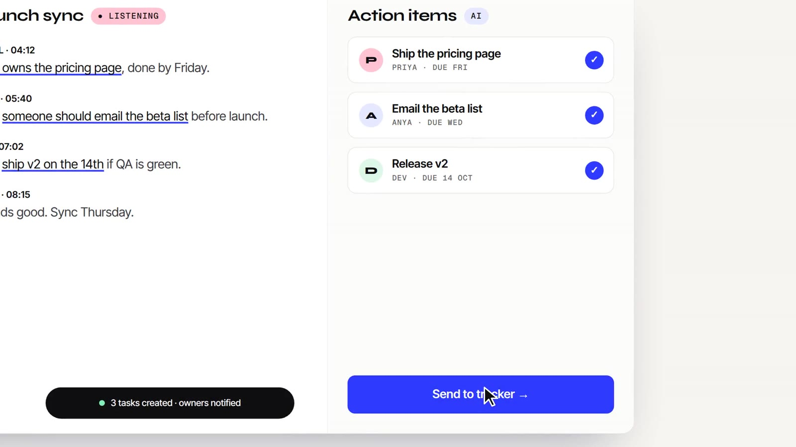
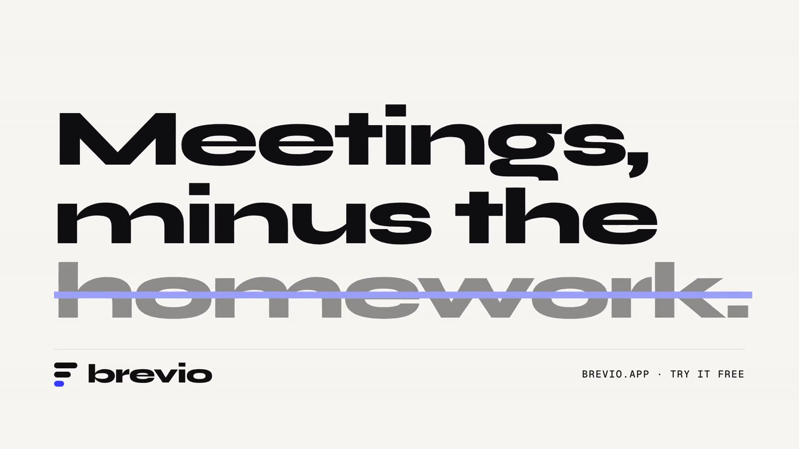

Brevio
An AI meeting-notes tool. The demo shows the real product loop: a transcript turns into assigned tasks in seconds.
Brevio is a fictional brand. We wrote the brief ourselves and built the film to the same standard and process as client work. All people, stats and quotes in it are invented.
The brief
AI note-takers are everywhere, and they all demo the same way: a blurry screen recording with a voiceover. The goal was a demo that makes the value obvious with the sound off.
The idea
Start with a feeling every team knows (“6 meetings today. Tasks written down: 0”), show decisions dying in a transcript, then run the product loop live: highlight → task card → send to tracker. It ends on a joke: “Meetings, minus the homework”, with the last word struck out.






How it's made
The interface is rebuilt as real HTML, not recorded, so text is razor-sharp at any size. A scripted cursor drives the demo while the camera punches in on the moment that matters. Wide Syne display type and one cobalt accent give it a confident, poster-like voice.
Type: Syne · Inter Tight · Geist Mono
Credits
Concept, script, art direction, animation, sound design and edit: NexusPulse Studio.